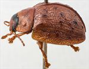
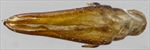
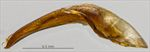
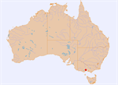
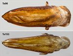

Click on images to enlarge
{kind=link}

Male, Brisbane Ranges, Victoria
{kind=link}

Aedeagus, dorsal view (Brisbane Ranges, Victoria)
{kind=link}

Aedeagus, lateral view (Brisbane Ranges, Victoria)
{kind=link}

Distribution
{kind=link}

Dorsal surface of aedeagus of Ta06 and Ta153
Name
Trachymela sp. Ta153
Reference specimen
PGK/5345, Brisbane Ranges, Victoria.
Adult Description
Length: ♀ ? mm [0], ♂ 6.3 mm [1].
Colour: head: uniformly mid-brown anteriorly to just past rear of eyes, then black, mandibles mid-brown with black tips; antennomeres straw-brown, the distal antennomeres usually very slightly darker; pronotum: uniformly brown, same shade as anterior of head; broadly edged in a slightly darker shade of brown; elytra: brown, same shade as pronotum, scattered with a few elevated, darker brown verrucae primarily in the posterior half, with some in the scutellar angle and one or two more inconspicuous ones in marginal area; punctures are a fractionally darker shade than interstices, humeral callus same shade as surrounding area; venter: light- to mid-brown with legs of a similar shade, inside surface of elytral epipleura brown. Cuticular wax: unknown.
Head; punctures moderately large (pd~1.5-2xef) and quite evenly and quite densely packed. Antennae moderately long (AL ♂=41.7%BL, ♀=32-33%BL), filiform. Pronotum; almost evenly curved transversely, foveal depression very shallow with epidermis elevated in a rounded, slighly extended pustule near its centre, discal area with surface somewhat uneven and puncturation clearly impressed for the most part, evenly distributed and quite dense (spacing~2pd), becoming much coarser at lateral margins, some much finer punctures are scattered among the larger ones. Front margins join lateral margins in a smoothly rounded right-angle, with lateral margin initially straight before curving smoothly and gradually towards rear margin; widest point is about 60% of distance to rear margin. Scutellum; finely shagreened, unpunctured,. Elytra; surface unevenly curved with antero-median depression distinct, punctures distinct and relatively large, closely spaced and evenly distributed over anterior two-third of surface, surface slightly more granular in posterior third though punctures distinct throughout, with much smaller punctures scattered on the interstices, punctures in marginal area slighly larger than on disc; a few small elevated, usually dark verrucae scattered about the surface of disc, the most prominent of these are in the posterior half and situated in VR2, VR4 and VR5; the basal portions of VR2, VR3 and VR4 also represented as verrucae, slightly smaller than the largest in the posterior half; posterior edge of antero-median depression with one or two verrucae connected by some transverse elevated interstices; surface continuous under humeral callus, lateral margin almost straight. Vertical extension of epipleura considerable (HCE/PW=0.40). Venter; Prosternal process narrowing slightly anteriorly, closed anteriorly, a light scatter of setae along prosternal process and on mesosternum, a single seta each on anterior, median and posterior trochanters; front edge of metasternum beveled, slightly rounded; inner edge of posterior of epipleura lacking setae. Aedeagus; very small (LPE=22.4%BL), lanceolate, in dorsal view, broadest at junction with basal section, from where sides converge relatively uniformly towards rear of ostium, at which point the width is about 60% of maximum width, the angle of convergence becoming shallower from there towards apex before again converging more rapidly and smoothly to apex, tip slightly protruding, dorsal surface smoothly curved with faint dorso-median channel present for most of length, ostium moderate in size, in the form of elongated oval, dorsal ostial processes extend almost to apex; in lateral view, curved around 130̊ near widest point, then very lightly and evenly curved towards apex before a noticeably stronger downward curve just before apex, thinning very gradually towards apex before ostium, tip deflexed.Larvae
unknown.
Eggs
unknown.
Similar species
Ta06 – in terms of size, colouring and the form of the elytral sculpture, this species is very similar to Ta153. With only a single specimen of Ta153 available, it is impossible to know whether this specimen is typical of the species. The verrucae in the posterior half of the elytral disc are certainly larger and more prominent (though fewer) than is typical of specimens of Ta06. The aedeagus is of the same size as that of a specimen of Ta06 of equivalent size but is prominently narrowed in the anterior half (see comparative illustration).
Notes
The only specimen known of Ta153 was recorded from Eucalyptus goniocalyx (Symphyomyrtus: Maidenaria).
Copyright © 2026. All rights reserved.